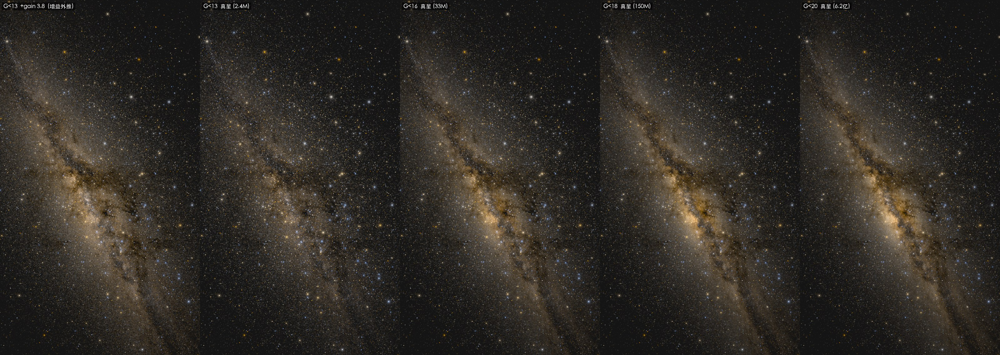

写给想知道"为什么这样画"的人
渲染原理深度解读
主页上那些图没有用任何银河贴图、尘埃素材或手绘辉光，画面里的每一个像素都能追溯到 Gaia 星表里某一批真实恒星，加上几条有明确物理依据的显示规则。这一页把整条渲染管线拆成五步，从最朴素的"每颗星一个像素"出发，一步步加规则、加数据，看画面如何向真实推进。每一步都配一张消融实验图和可复现的命令。
两条贯穿始终的原则
第一，物理层和显示层严格分开。恒星的位置、亮度、颜色由星表数据和坐标变换决定，这部分不为视觉效果让步；屏幕上最终的观感由显示参数控制，这部分明确承认自己是显示决策。两套体系各自独立，显示参数永远不伪装成天体物理常数。
第二，每个显示参数都要有物理锚点，并且在命令行里显式暴露。下面会看到，连"暗星该补偿多少倍亮度"这样听起来像美学调参的数字，也能从星表自己的统计里推出来。这样做的直接好处是：本页所有实验图都附了完整命令，任何人 clone 仓库都能逐字复现。先说一个所有步骤都用到的锚点：星等到屏幕亮度的换算需要一个"多亮算可见"的基准，我们用天文爱好者社区长期积累的经验——每个 Bortle 光污染等级对应一个裸眼极限星等（NELM），顶级暗空约 7.8 等、明亮郊区约 5.3 等、市中心约 4.0 等。恰好处在极限星等的恒星被画成天空背景的固定比例（默认 0.5 倍），更亮的星按 Pogson 公式（每差 5 等亮度差 100 倍）往上走。什么星看得见，不是调出来的，是从观测经验表里读出来的。
五步流水线
下面固定同一片天空（广州纬度、顶级暗空，主页 hero 图的设定），从完全不真实的画法开始，每一步只动一处。所有图都用仓库里的同一条命令渲染，只换参数开关。
直接把真实恒星落点，这一步没有坑
七百多万颗星按真实位置和 Pogson 亮度直接落在单个像素上。值得强调的是：银河的密度起伏此刻已经在了，数据本身就带着它，不需要任何后续技巧去"造"出银河。这一步是诚实的地基，没有什么需要修。它的不足只是视觉质感——所有星都是同样大小的硬颗粒，亮暗只有明度差没有大小差，画面像撒了一层盐，缩小一半就开始闪烁断裂。后面四步全是在不动这份真实数据的前提下，补上成像物理和人眼感知。
--psf-core-px 0 --faint-gain 1 \
--sat-over-sky 0 --ext-threshold 0
给所有星同一个光学弥散，给暗星补上积分光
这一步加两件事，都关于"星该怎么落在成像面上"。
先是 PSF。真实光学系统里，点扩散函数（一颗点光源在成像面上的弥散形状）是相机的属性，不是恒星的属性：同一台相机拍出来，织女星和一颗 10 等星的光斑形状完全相同，差别只在振幅。所以所有恒星共用同一个约 0.6 像素的高斯核，盐粒感消失，星点有了真实成像系统的柔和形态。这个核取得这么窄是踩出来的：早期取 1.1 像素时整幅画面偏糊像隔了层毛玻璃，收窄到接近点采样的 0.6 像素后暗星重新有了颗粒、银河纹理变锐，而"亮星该显大"这件事交给下一步的饱和溢出去产生，PSF 不必靠加宽来兼任。顺带一个实现事实：PSF 是对整幅画布做一次卷积，代价和星数无关。
再是增益。渲染这一版的星表截断在 13 等，但肉眼看到的银河乳光，主要来自截断之后几十亿颗不可分辨恒星的积分光。我们让 11 到 13 等的暗星乘一个增益，代理整个更暗的族群——它们跟踪同一个空间分布。增益的数值能从星表自己推出来：统计光度函数会发现每个星等区间贡献的总光通量几乎相等（星数每暗一等翻约 2.6 倍，单颗亮度同时降 2.5 倍，两边抵消），按实测斜率外推到 21 等，缺失的积分光约是 11-13 等区间的 2.8 倍，取增益 3.8。这一条有个免费副产品：尘埃暗带在星表里表现为"那里缺暗星"，增益放大的是星数本身，所以乳光和暗带同时浮现，不需要任何尘埃贴图。和上一步对照，银河带的中位亮度提高约三分之一，乳光变厚，暗带加深。
--psf-core-px 0.6 --faint-gain 3.8 \
--sat-over-sky 0 --ext-threshold 0
亮星的大小来自能量守恒，不是更大的笔刷
真实照片里亮星显大有两个机制：传感器（或视网膜）在亮星核心处饱和，同样的光斑轮廓有更宽的部分越过显示上限；散射和衍射把溢出的能量摊成光晕。我们按这个机制实现：线性亮度超过饱和线的部分被截下来，按两个更宽的高斯（3 像素和 9 像素）重新散布回画面。关键性质是能量守恒——溢出翼只是把过亮核心的光摊开，不无中生有。这样恒星的视大小随亮度连续增长，从暗星的单像素颗粒到亮星的饱和盘面之间没有任何分段缝，星空照片里那种"亮星压得住场面"的层次感就来自这一步。
饱和线挂在星等阶梯上，不挂在某个固定亮度上。我们在这里踩过一个坑：模拟"眼睛灵敏度提高 4 等"时所有星光等比放大 40 倍，饱和线若不跟着走，画面里四分之一的像素会被截断、整条银河洗成一片柔光。修正后的饱和线表达成"比极限星等亮若干等的星开始饱和"，随亮度阶梯平移，任何灵敏度设定下饱和的都是该饱和的那批星。
--psf-core-px 0.6 --faint-gain 3.8 \
--sat-over-sky 6 --ext-threshold 0
奇技淫巧不如以力破巧
到上一步，画面靠的是"少量较亮的星 × 增益外推"补出乳光。增益是个聪明的奇技淫巧：在数据稀疏时，用光度函数把缺失的几十亿暗星的总光量补回来。但它有个代理不到的东西——光的颗粒统计。"少量较亮的颗粒乘大增益"和"大量细颗粒乘小增益"总光量一样，放大看质感完全不同，后者乳光细腻、暗带锐利，前者像被放大的噪点。
解法不是更精巧的技巧，而是更多的真实数据。我们把广州这片天区的星表一路加深：13 等 240 万颗、16 等 3300 万颗、18 等 1.5 亿颗、20 等 6.16 亿颗。下面这组对照里，最左是 13 等加增益的奇技淫巧版，往右是真实星无增益、逐级加深的四档。趋势很清楚：真星越多，乳光越细腻饱满、裂隙两侧的亮云越突出、暗带越有结构，全部自然涌现，不需要任何 trick。增益够用，但它只能逼近，真实数据才是上限。主页和这一页的高清大图都来自 20 等真星这一档。
# 真星无增益，只换星表深度
--data data/raw/fov_g20.npz --faint-gain 1
最后一步交给观看者的眼睛和屏幕
前四步把真实的天空算了出来，最后一步是把它正确地交付到屏幕和人眼。这里有一条关键的感知规则：人眼探测一颗点状的星，和察觉一片大面积的微弱亮光，是两套完全不同的机制。前者由极限星等描述，后者服从 Weber 对比阈值——低于天空背景百分之几的弥散结构，眼睛就是看不见，哪怕相机长曝光拍得清清楚楚。我们测过各级光污染下银河带相对天空的对比度：顶级暗空 93%，明亮郊区 9%，市中心 2.8%。如果显示管线把任何正对比都画出来，市中心也会残留一条隐约的银河，与真实经验相悖。
实现上用一个 8 像素的高斯把画面分成弥散光（低频）和点源（高频），弥散光减去 3.5% 天空亮度的阈值，点源原样保留。施加之后银河在 7 级光污染左右从画面里消失，8、9 级只剩亮星，顶级暗空几乎无感。这个阈值刻意不随灵敏度增益缩放：双筒望远镜把弥散光对比放大过阈值后银河重新可见——这正是器材党在城里也能扫到银河的机制。在主页那张暗空 hero 图里这一步几乎不改变画面（银河对比远高于阈值），它真正的作用在光污染下，见下面的对比。
默认参数（全部规则开启）
Weber 阈值在光污染下的作用
同一片天空，Bortle 7（城市边缘）、裸眼。左边关闭阈值：银河带残留一条隐约的痕迹，这是相机才能看到的对比度。右边打开阈值：弥散光低于人眼能察觉的水平，被显示层移除，只剩亮星——这才是城市边缘抬头真实看到的天空。


颜色，以及两个诚实的边界
星色经过白点锚定，而不是手搓的色彩近似
颜色这一步我们一开始低估了。Gaia 给了每颗星的色指数（BP-RP），直觉是亮的偏蓝、暗的偏红，照着上色就行。但早期版本里整条银河泛着一层暖黄，跟任何一张像样的天文照片都不像。问题出在一个张冠李戴的等号：我们把 Gaia 的 BP-RP 当成了天文里更常见的另一个色指数 B-V，用手搓的近似公式直接转成颜色。两者是不同滤光片测出来的，数值并不对应，银盘里 BP-RP 落在 1 到 2 的主力恒星被整体推向暖黄，再被显示层的饱和度放大，整张图就黄成了一片。
修法是换成标准的物理链，而这条链本身就规定了该怎么做：色指数先换算成恒星表面温度（用 Pecaut & Mamajek 的主序星标定，太阳 G2V 对应 BP-RP≈0.82、温度 5772K），温度再通过黑体辐射谱乘以 CIE 1931 配色函数积分，得到线性 sRGB（与 Mitchell Charity 的恒星色温表交叉验证过）。关键是最后一步的锚点：把太阳这颗 5772K 的恒星定为中性白，每颗星的 RGB 都除以太阳的 RGB。这正是 PixInsight 的光度色彩校准、或 Photoshop 里"设定白点"操作的物理版本——先言明哪种光算白，其余颜色的冷暖才有了参照。锚定之后，银盘亮处的红蓝比从 1.83 落到 1.54，那层假暖黄褪去，而星与星之间真实的蓝黄差异完整保留：该蓝的还蓝，该红的还红，只是不再泡在咖啡色里。
边界一：大裂隙黑不到照片那个程度
这是一个没有干净结尾的 open question，值得照实说。银河大裂隙在我们的渲染里发灰，不像照片里那么黑。第一反应是个标准的幸存者偏差——尘埃方向还留在星表里的暗星，多数是尘埃前面的前景星，增益却拿它们的光按无尘埃的比例去推断尘埃后面的隐形族群。我们顺着这条线做了消光感知的修正：用 Gaia 给每颗星的消光测量，每个方向取深处恒星的消光作全柱厚度，未穿进尘埃的前景星其推断光按整堵墙打折，已经在尘埃里的星保持原样，直接观测到的星光一个光子都不动。
但修完一量，缝只黑了一档。把缝里的光分解开才看清：缝区约 87% 的光是 Gaia 直接观测到的真实星点，增益只够得着剩下那一小块推断光，所以无论怎么调消光衰减，缝最多黑一档就到顶。更深的原因是星表深度——我们做了判决性实验，把广州 FOV 的完整深星表一路测到 20 等真数据，缝与亮云的光比从 G<13 到 G<20 几乎不动（加深 250 倍星数，连续宽暗带的形态始终没有出现，只有零碎暗斑）。缝的消光只有两三个星等，压不没缝前面的前景星；照片里那种纯黑靠的是长曝光看到了 Gaia 远够不到的暗星，叠上激进的曲线拉伸。结论是诚实的：用 Gaia DR3 加上"只画真实星、不叠尘埃贴图"的原则，这条缝的对比就锁在现在这个程度。我们把这一格留作公开的边界，而不是假装修好了。
边界二：最亮的星，Gaia 反而缺席
还有一处数据缺陷得说清楚。Gaia 是为测量遥远暗星的距离设计的，太亮的恒星会让它的感光元件过曝，所以从 6 等往亮的方向星表越来越不全，到 2 等以上几乎一颗都不剩。实测这片天区 5 等以内只剩五百多颗，天狼、参宿四这种全天最显眼的亮星在我们用的数据里是缺席的——画面里真实银河本该有的那几十颗最扎眼的亮星目前并没有画上。补全它们需要另一份专门的亮星表（如耶鲁亮星表），是接下来要做的事。这同样是诚实渲染原则的一部分：缺什么，就说缺什么。
想看全部实现细节（坐标变换、tone mapping、共享亮度基准、视频管线的饱和锚点等），仓库里的 docs/rfc.md 是完整的设计文档，docs/working.md 记录了每一次调参和踩坑的过程。